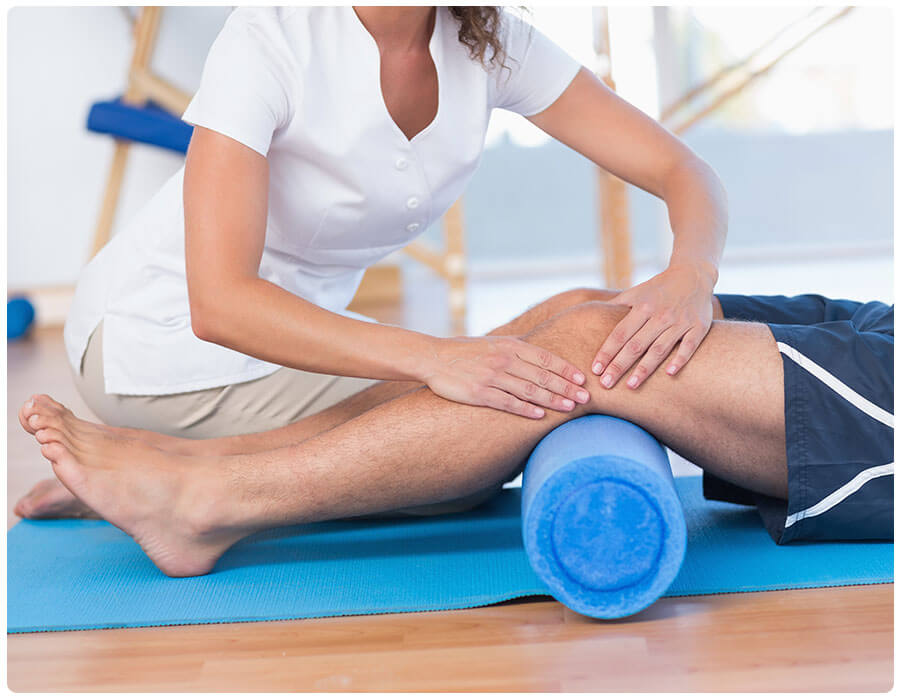

Ejercicio como Medicamento

Existen evidencias científicas que demuestran que la inactividad física causa el 6% del total de la carga de enfermedades del corazón, un 7% de las enfermedades relacionadas con la diabetes tipo II y un 10% de los casos de cáncer de mama y de colon, por otra parte la realización de ejercicio físico descontrolado o de forma inadecuado es fuente de lesiones y patologías.
Si tenemos en cuenta que el 50,5 de la población española hace actividad física regular cada semana este problema se convierte en un tema importante de salud pública.
Leer másMedicina y Traumatología del Deporte
La Medicina y Traumatología del Deporte (MTD) nace de la Medicina del Deporte como respuesta a las lesiones traumáticas que suceden durante la práctica deportiva y que son atendidas por el médico del deporte que desarrolla su actividad dentro del equipo deportivo o club.
La MTD presenta unas características diferenciales del resto de las especialidades médicas. Uno de estos hechos es que la MTD persigue no solo curar al deportista lesionado, sino también que alcance el mayor rendimiento funcional después de la lesión sufrida. Además tiene que ser en el menor tiempo posible porque tiene que cumplir unos plazos de entrenamientos que al final convergen en la competición.
Leer másNutrición Deportiva

la nutrición y la dietética en la práctica de la actividad física y el deporte ha presentado una gran evolución. En la pasada década, numerosos estudios científicos han conectado la necesidad de alcanzar unos requerimientos energéticos, nutricionales y de líquidos, para garantizar una adecuada práctica.
La nutrición deportiva es la herramienta de apoyo para aquellos deportistas, ya sean principiantes, habituales o profesionales, necesaria para abordar correctamente su actividad, maximizar el rendimiento, asegurar un óptimo estado de salud, y alcanzar aquellas metas personales y competitivas.
Leer más